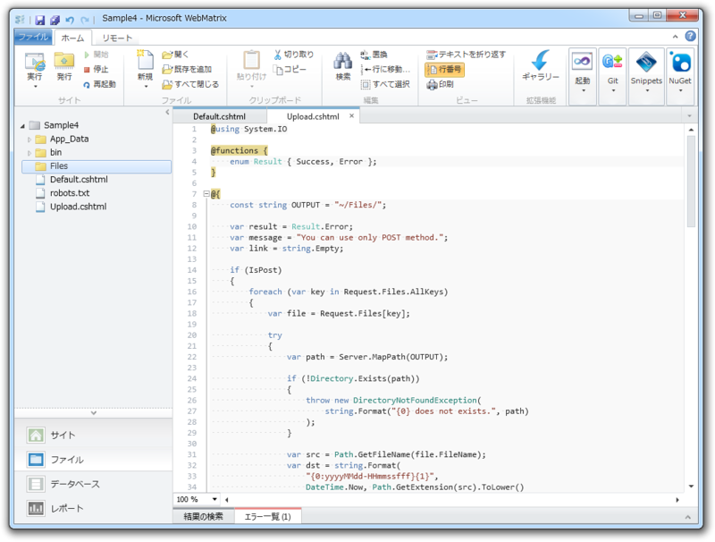
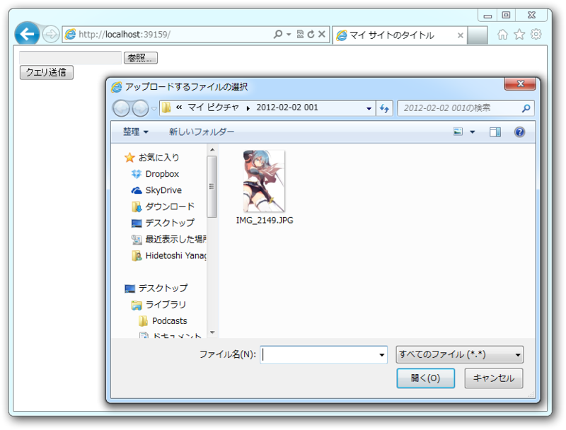
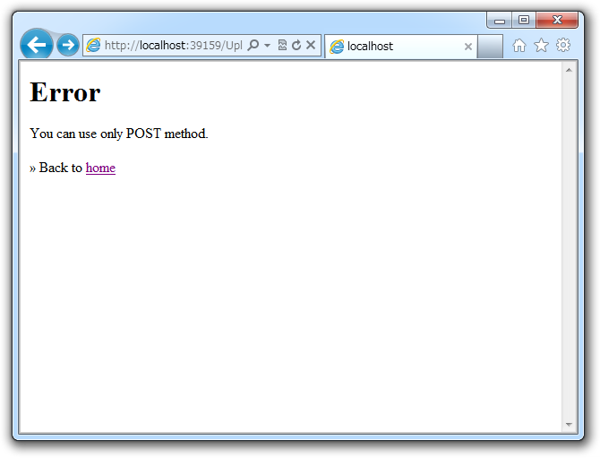
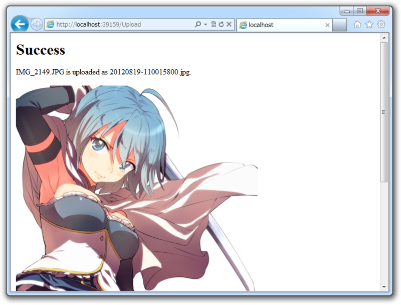
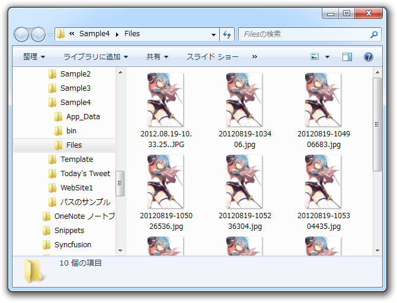
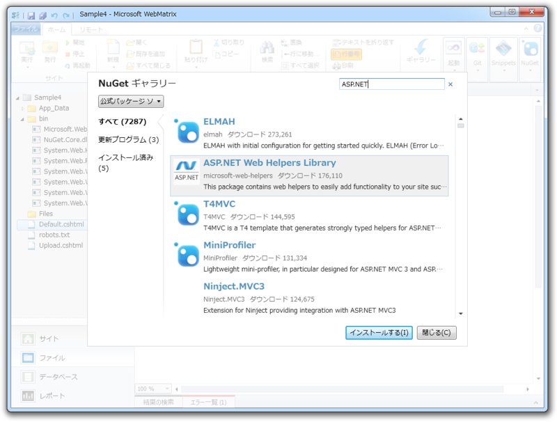
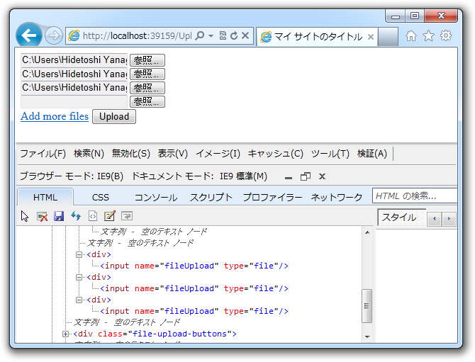
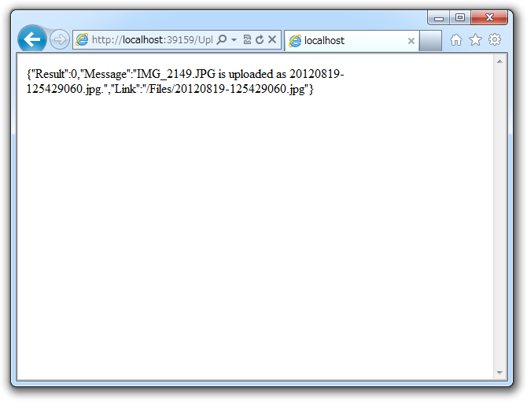

WebMatrix でファイルのアップロード
公開日：

今日は「WebMatrix 2」でファイルのアップロードを試してみた。なお、このサンプルは「Empty Sites」テンプレートを元に作成している。
Delault.cshtml
<!DOCTYPE html><html lang="ja"> <head> <meta charset="utf-8" /> <title>マイ サイトのタイトル</title> </head> <body> <form action="~/Upload" method="post" enctype="multipart/form-data"> <input type="file" name="upload" /><br /> <input type="submit" name="submit" /> </form> </body> </html>
拡張子を html にすれば、ただの HTML ドキュメントだね！ ファイルのアップロードを行うので、 multipart/form-data をつけるのを忘れないように。

Upload.cshtml
アップロード処理を行う cshtml はこんな感じにしてみた。
ほんとは path が存在しなければ例外、 file のサイズが 0 ならば例外、 file が image/*** でなければ例外、といったチェックを入れるのだけれど、ソースが長くなるので割愛している。あと、最初から複数ファイルのアップデートに対応できるように記述している。
@using System.IO@functions { enum Result { Success, Error }; }
@{ var result = Result.Error; var message = "You can use only POST method."; var link = string.Empty;
if (IsPost) { foreach (var key in Request.Files.AllKeys) { var file = Request.Files[key];
try { const string OUTPUT = "~/Files/"; var path = Server.MapPath(OUTPUT);
var src = Path.GetFileName(file.FileName); var dst = string.Format( "{0:yyyyMMdd-HHmmssfff}{1}", DateTime.Now, Path.GetExtension(src).ToLower() );
file.SaveAs(Path.Combine(path, dst));
result = Result.Success; message = string.Format( "{0} is uploaded as {1}.", src, dst ); link = VirtualPathUtility.ToAbsolute(OUTPUT + dst); } catch (Exception e) { result = Result.Error; message = e.Message; } } } }
<h1>@result</h1> <p>@message</p> if (!string.IsNullOrEmpty(link)) { <p><img src="@link" /></p> } <p>» Back to <a href="~/">home</a></p>
基本的には、 Request.Files でファイルを取得し、 SaveAs() で保存するだけ。そのほかはファイル名の決定だのエラー処理だのといったことをしているに過ぎない。
Default.cshtml から画像ファイルを POST すると、

エラーが出たらこんな感じで……

成功したらこんな感じになる。

"~/Files/“フォルダが夢のようになっておるな！
ステップアップ
ヘルパーで楽をしよ……ぅ？

ASP.NET Web Helpers Library という NuGet をインストールすると、複数ファイルのアップロードに対応した Form タグを簡単に生成できる。
@FileUpload.GetHtml()
でも、個人的にはあんまり好きじゃなかったので今回は使わなかった。
<!DOCTYPE html>@{ if (IsPost) { foreach (var key in Request.Files.AllKeys) { var file = Request.Files[key];
try { file.SaveAs( System.IO.Path.Combine( Server.MapPath("~/Files/"), file.FileName) ); } catch (Exception e) {
} } } }
<html lang="ja"> <head> <meta charset="utf-8" /> <title>マイ サイトのタイトル</title> </head> <body> @FileUpload.GetHtml() </body> </html>

なんか動的に生成されるノードの名前がカブってるし*1、あんまりよくわかんなかった。
ビューでつかう変数をまとめる
Upload.cshtml のソースコードがなんだか冗長なのは、HTML の出力に使う result、message、link という3つの変数を処理するためだけど、こいつらって匿名クラスでまとめてもいいよね。
@using System.IO@functions { enum Result { Success, Error }; }
@{ const string OUTPUT = "~/Files/"; dynamic model = null;
if (IsPost) { foreach (var key in Request.Files.AllKeys) { var file = Request.Files[key];
try { var path = Server.MapPath(OUTPUT);
var src = Path.GetFileName(file.FileName); var dst = string.Format( "{0:yyyyMMdd-HHmmssfff}{1}", DateTime.Now, Path.GetExtension(src).ToLower() );
file.SaveAs(Path.Combine(path, dst));
model = new { Result = Result.Success, Message = string .Format("{0}‘s uploaded as {1}", src, dst), Link = VirtualPathUtility .ToAbsolute(OUTPUT + dst), }; } catch (Exception e) { model = new { Result = Result.Error, Message = e.Message, Link = string.Empty, }; } } } else { model = new { Result = Result.Error, Message = "You can use only POST method", Link = string.Empty, }; } }
<h1>@model.Result</h1> <p>@model.Message</p> @if (!string.IsNullOrEmpty(model.Link)) { <p><img src="@model.Link" /></p> } <p>» Back to <a href="~/">home</a></p>
記述量はかえって多くなったけど、「何かの処理 → 結果（モデル）の生成」という流れが明確になった気がする。この @model っていうのが MVVM の ViewModel じゃない ViewModel という理解でいいんでしょうか。
Ajax には Json で応える
ViewModel を返すことの利点は、可読性だけじゃない。たとえばこんなこともできる。
@if (IsAjax) { // Response.ContentType = "application/json"; Response.Write(Json.Encode(model)); } else { <h1>@model.Result</h1> <p>@model.Message</p> if (!string.IsNullOrEmpty(model.Link)) { <p><img src="@model.Link" /></p> } <p>» Back to <a href="~/">home</a></p> }

Ajax リクエストに Json で応えるなんてことも簡単にできる！
拡張メソッドのお時間です
あとさ、これダサいよね。
foreach (var key in Request.Files.AllKeys) { var file = Request.Files[key]; ： ：
拡張メソッドを書いて、シンプルにしましょう。
foreach (var file in Request.Files.ToEnumerable()) { ： ：
~/App_Code/HttpFileCollectionBaseExtension.cs を作成してこのように書いてみました。
using System.Collections.Generic; using System.Web;public static class HttpFileCollectionBaseExtension { public static IEnumerable<HttpPostedFileBase> ToEnumerable( this HttpFileCollectionBase target) { foreach (var key in target.AllKeys) { yield return target[key]; } } }
*1:JavaScriptの不具合かなぁ